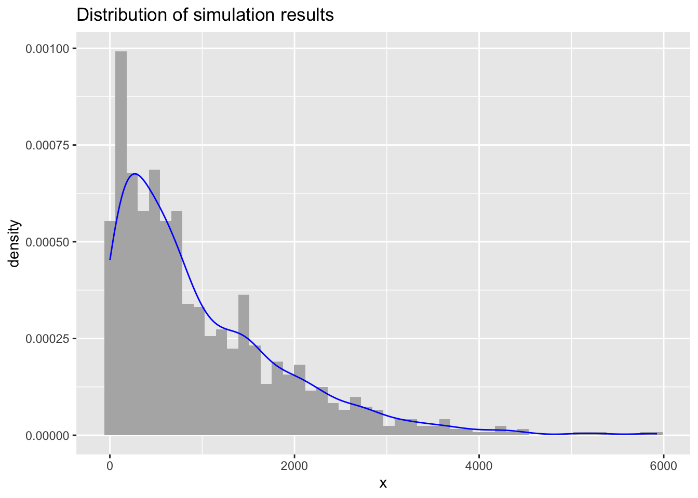
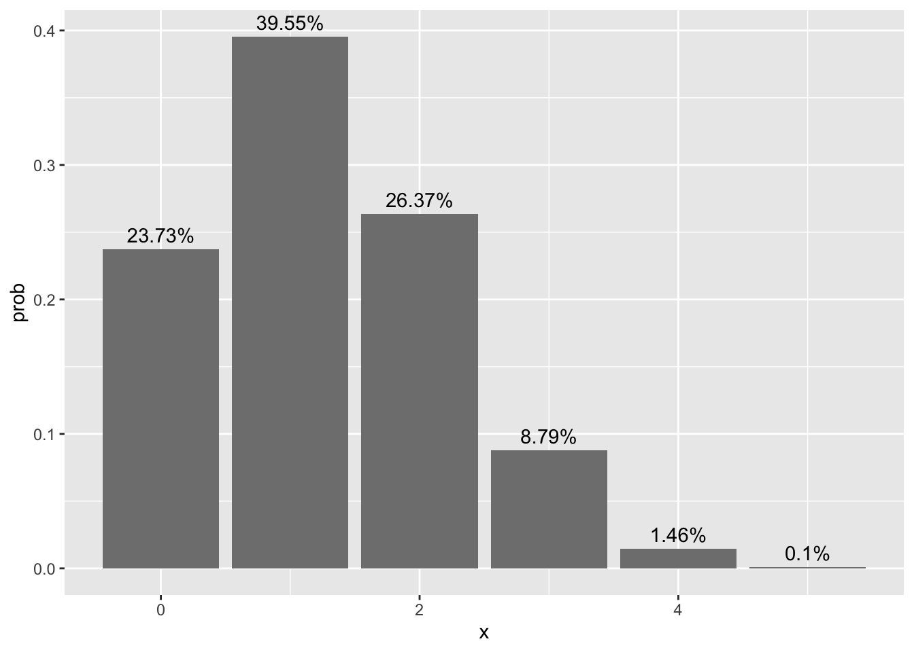
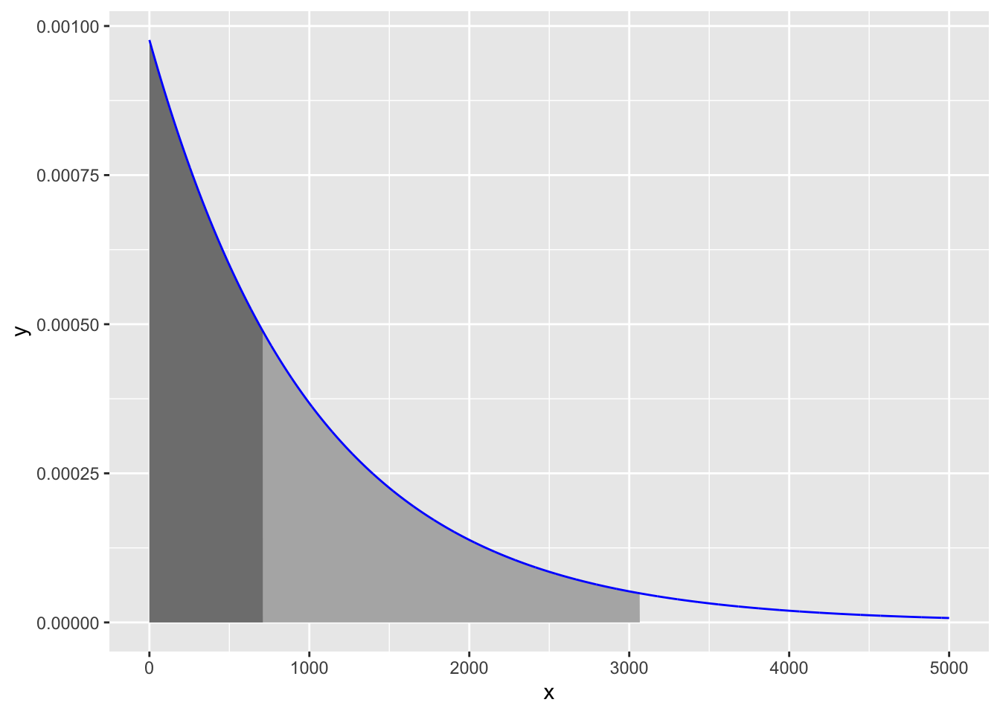

size <- 5 # Test size (i.e. number of questions)
p <- 1/4 # Probability of randomly getting correct answerHow many times do I need to take a test to randomly get all questions correct?
R
Statistics
Darrin Rogers asked on Mastadon what are the “number of tries it would take, guessing randomly, to get 100% on a quiz if you had unlimited retries.” Here we will outline two ways to solve this problem: using a simulation and using a combination of the binomial and geometric distributions. Let’s consider an example of a 5 question test where each question has four options, hence the probability of getting any one question correct is 1/4.
We can use the sample function to simulate on test attempt.
test <- sample(c(TRUE, FALSE), size = size, prob = c(p, 1 - p), replace = TRUE)
test[1] TRUE FALSE FALSE FALSE FALSENext, let’s write a function that will simulate repeatedly take a test until all the questions are correct. I have added an additional parameter stop_score which specifies the mean score on the test before stopping. This will allow us to modify the question to answer how many tests do I need to take to pass. For now, stop_score = 1 will continue until all questions are correct.
#' Simulate how long until a specified number of responses are correct
#' @param size test size.
#' @param prob probability of randomly getting correct answer
#' @param stop_score the score on the test we wish to achieve. Value of 1
#' indicates a perfect score.
simulate_test <- function(size, p, stop_score = 1) {
n <- 0
repeat{
n <- n + 1
test <- sample(c(TRUE, FALSE),
size = size,
prob = c(p, 1 - p),
replace = TRUE)
if(mean(test) >= stop_score) {
break
}
}
return(n)
}We can run one test to see how long we need to wait until all questions on the test were answered correctly.
(num_tests <- simulate_test(size = size, p = p))[1] 158For this one simulation, it took 158 to randomly get all the questions correct. Let’s now run this simulation 1,000 times.
simulations <- integer(1000)
for(i in 1:length(simulations)) {
simulations[i] <- simulate_test(size = size, p = p)
}
mean(simulations)[1] 977.858median(simulations)[1] 687For this simulation the average “wait time” until all questions were answered correctly is 977.858. Since the distribution is not symmetrical it may be more appropriate to use the median. Here, 50% of the simulations returned a perfect score in fewer than 687 attempts.
ggplot(data.frame(x = simulations), aes(x = x)) +
geom_histogram(aes(y = ..density..), bins = 50, fill = 'grey70') +
geom_density(color = 'blue') +
ggtitle('Distribution of simulation results')Warning: The dot-dot notation (`..density..`) was deprecated in ggplot2 3.4.0.
ℹ Please use `after_stat(density)` instead.
Let’s return to a single test attempt. We can use the binomial distribution to calculate the probability of getting k questions correct on this 5 question test.
dist <- dbinom(x = 0:size, size = size, prob = p)
ggplot(data.frame(x = 0:size,
prob = dist,
label = paste0(round(100 * dist, digits = 2), '%')),
aes(x = x, y = prob, label = label)) +
geom_bar(stat = 'identity', fill = 'grey50') +
geom_text(vjust = -0.5)
The probability of getting all 5 questions on this test is 9.765625^{-4}. We can now treat each test attempt as a Bernoulli trial where the probability of success is 9.765625^{-4}. The geometric distribution gives us the number of Bernoulli trials we need to get one success. The mean for the geometric distribution are:
\[ \mu = \frac{1}{p} \]
Therefore, it will take an average of 1024 test attempts before getting all questions correct on the attempt.
(p_all_correct <- dbinom(x = size, size = size, prob = p))[1] 0.00097656251 / p_all_correct[1] 1024However, the geometric distribution is not symmetrical so using the mean not be desirable. Here is the geometric distribution for where the probability of success is 9.765625^{-4}.
geom_dist <- data.frame(x = 0:5000,
y = dgeom(0:5000, prob = dbinom(x = size, size = size, prob = p)))
cut_point50 <- qgeom(0.50, prob = dbinom(x = size, size = size, prob = p))
cut_point95 <- qgeom(0.95, prob = dbinom(x = size, size = size, prob = p))
ggplot(geom_dist, aes(x = x, y = y)) +
geom_polygon(data = rbind(data.frame(x = 0, y = 0),
geom_dist[geom_dist$x < cut_point95,],
data.frame(x = cut_point95, y = 0)),
fill = 'grey70') +
geom_polygon(data = rbind(data.frame(x = 0, y = 0),
geom_dist[geom_dist$x < cut_point50,],
data.frame(x = cut_point50, y = 0)),
fill = 'grey50') +
geom_path(stat = 'identity', color = 'blue')
The shaded area corresponds to 50% of the area. That is, if we conduct 709 tests we are 50% likely to get a test with all the answers correct. Want to be 95% sure to get a test with all answers correct, then administer 3066 tests.
We can tweak the question slightly: What is the average number of tests I would have to take before passing if the answers are randomly selected? For this example, I am considering getting 4 or 5 questions correct passing. We can get the probability of getting 4 or 5 questions correct from the binomial distribution, which is 0.015625.
p_pass <- dbinom(x = 4:5, size = size, prob = p) |> sum()
1 / p_pass[1] 64To just pass, we have to wait much less. We can also calculate this using the simulate_test function defined above.
simulations2 <- integer(1000)
for(i in 1:length(simulations2)) {
simulations2[i] <- simulate_test(size = size, p = p, stop_score = 0.8)
}
mean(simulations2)[1] 62.291median(simulations2)[1] 44Or using the geometric distribution:
qgeom(0.50, prob = p_pass)[1] 44qgeom(0.95, prob = p_pass)[1] 190